BRDF
1. 数学概念
1.1球坐标系
是一种利用球坐标(r,θ,Φ)表示一个点在三维空间中的位置的三维正交坐标系。r表示向量的长度，θ表示向量和Z轴的夹角，Φ表示向量在x-y平面上的投影和x轴的逆时针夹角。
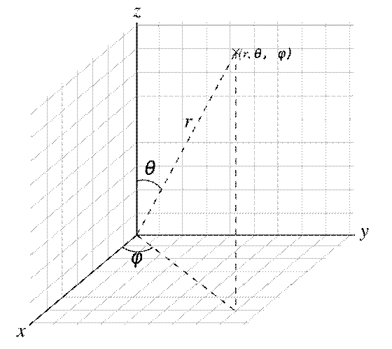
1.2立体角
以观测点为球心，构造一个单位球面；任意物体投影到该单位球面上的投影面积，即为该物体相对于该观测点的立体角。立体角是单位球面上的一块面积，这和“平面角是单位圆上的一段弧长”类似。
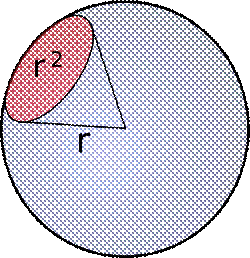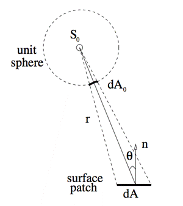
单位为球面度(Steradian,简写Sr)。面积为半径平方(r2)的球表面对球心的张角等于1球面度。因为球的表面积是4πr2，所以，整个球面有4π球面度。
由球表面积积分，可以得到立体角的积分形式：
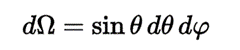
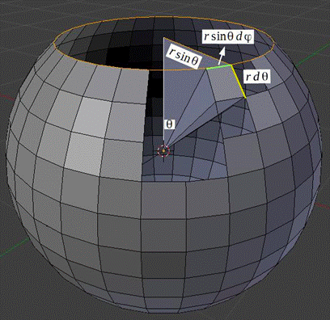
1.5 Foreshortening
投影面描述了一个物体表面的微小区域在某个视线方向上的可见面积。
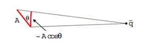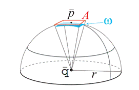
2. Radiometry(辐射度量学)
2.1 Radiant Energy
辐射能量Qe,单位焦耳J
2.2 Radiant flux
辐射通量Φe,单位瓦特W,每单位时间的辐射能量，也可称为光通量、辐射功率。
2.3 Irradiance
辐照度Ee,单位瓦特每平方米W・m−2，用来表示入射表面单位面积上的辐射通量。表达了辐射通量对于面积的密度。也被称为辉度。
2.4 Radiant Exitance
辐射出射度Me,单位瓦特每平方米W・m−2，用来表示单位表面上出射的辐射通量。
2.5 Radiant Intensity
辐射强度Ie,Ω,单位瓦特每球面度W・sr−1，单位立体角上的辐射通量,也被称为发光强度。
2.6Radiance
辐射率Le,Ω,单位瓦特每球面度每平方米W・sr−1・m−2，单位立体角单位投影面积上的辐射通量。
表示了物体表面沿某一方向的光的亮度。可以将辐射率理解为物体表面的微面元所接收的来自于某方向光源的单位面积的光通量。
3. BRDF
BRDF(Bidirectional Reflectance Distribution Function,译作双向反射分布函数)描述光如何从给定的两个方向（入射光方向l和出射方向v）在表面进行反射的函数。
BRDF的定义
BRDF的微分形式
定义为出射辐射率的微分（differential outgoing radiance）和入射辐照度的微分（differential incoming irradiance）之比：
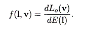
BRDF的非微分形式
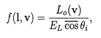
BRDF的着色方程
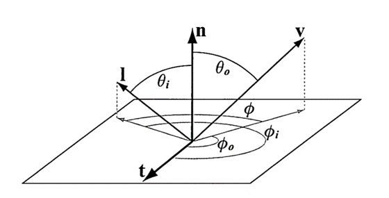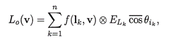
BRDF的特性
Helmholtz Reciprocity
赫姆霍兹对称性或者赫姆霍兹可行性，意思为交换入射光和反射光的方向，brdf函数的值相等：
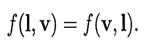
Conservation Of Energy
能量守恒定律指出：入射光或被反射，或被次表面散射，或被吸收。入射光的能量应该等于反射部分能量与次表面散射部分能量以及被吸收的能量之和。
BRDF的延展
Subsurface Scattering
次表面散射描述的现象是，当光接触物体的表面时，一部分被反射出去（光的反射）一部分进入物体的表面（光的折射或传播）。进入物体表面的光或被吸收，或经过多次的散射最终传播出物体表面。
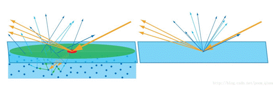
BSSRDF
入射光在一个入射点接触物体表面，进入内部的光经过多次散射后，从表面的其他位置射出。观察点距离入射点一定距离时，可以认为入射点和出射点是相同的位置。这也是BRDF考虑的情况。
双向表面散射分布函数Bidirectional Surface Scattering Reflectance Distribution Function还需要考虑入射光和出射光的位置。
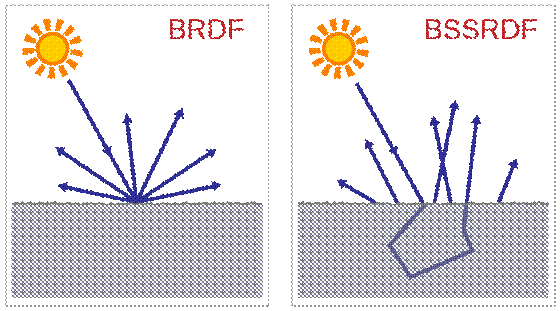
SVBRDF(SBRDF)
BRDF认为物体表面的材质都是均匀统一的，不同的位置都具有相同的函数值。这在现实中基本不可能，即使由同一种材质构成，表面上不同的位置，粗糙度、腐蚀程度、污迹分布等可能都不一样。SVBRDF(Spatially varying BRDF or Spatial BRDF)除了入射方向、视点方向外，还要考虑空间上的位置。
BSDF
即使描述了更一般情况的BSSRDF，仍然忽略显示中非常重要的一些因素，如光的偏振。此外，也没有考虑光穿过物体表面传播的情况，只处理了光的反射。BSDF（S -Scattering）定义了两个BRDF和两个BTDF（T abbr for Transmittance）。
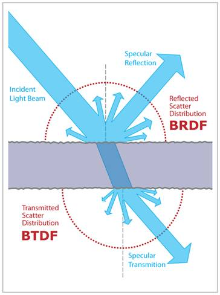
微几何
物体的表面在宏观上是平的，但在微观上看，可以呈现出很多细节，如表现出一定的粗糙度，会影响光的反射。
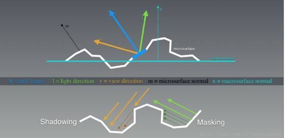
Smoothness
越光滑的表面，微几何表面的法线的分布越往宏观法线方向集中。更广范围的法线分布，反射出的光的方向也越光，视觉上的高光范围也就越大。
Anisotropy
大部分的微几何表面上的法线分布，是旋转后对称的，也即各向同性的（isotropic）。也有部分是各向异性的 （anisotropic），入射光的方向影响反射的结果。
Shadowing
微几何上被其他部分挡住光源，会产生阴影。
Masking
微几何上由于被其他部分挡住视线，会产生遮罩。
微表面理论
微表面模型Microfacet Thoery从数学上描述微几何。微几何是一系列微表面的集合。
微表面
每个微表面（Microfacet）是一个微小的、平的、fresnel反射的镜面。
Half vector
光的入射方向l，视线方向v，位于他们中间的方向即为half vector，用h表示。只有法线为h的微表面反射的光才能进入视线。
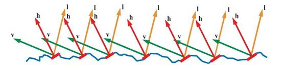
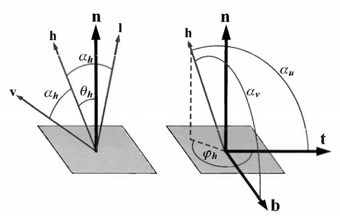
NDF
用表面的法线分布函数NDF(Normal Distribution Function)来描述表面的特征。D(h)来描述朝向是h的微表面数占微表面总数的比例。
所有方向上的法线分布函数的和应该等于1。

4. BRDF模型
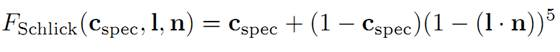
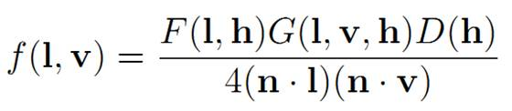
l F为菲涅尔反射函数(Fresnel 函数)
l G为阴影遮罩函数（Geometry Factor，几何因子），即未被shadow或mask的比例
l D为法线分布函数(NDF)
不同的f()函数实现，即为不同的BRDF模型。实现不同的f()函数可拆分为实现不同的D()、G()函数：
Lambert
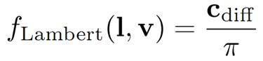
NDF
Phong NDF
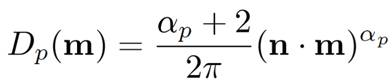
Beckmann NDF
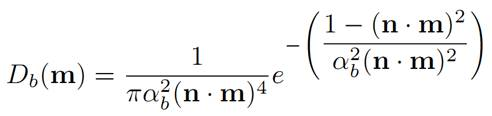
TrowBridge-Reitz( GGX) NDF
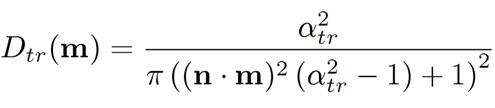
Geometry Factor
Simplest Possible Visibility
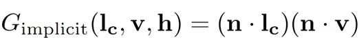
即：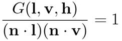
Cook-Torrance
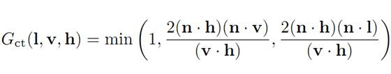
Kelemen-Szirmay-Kalos